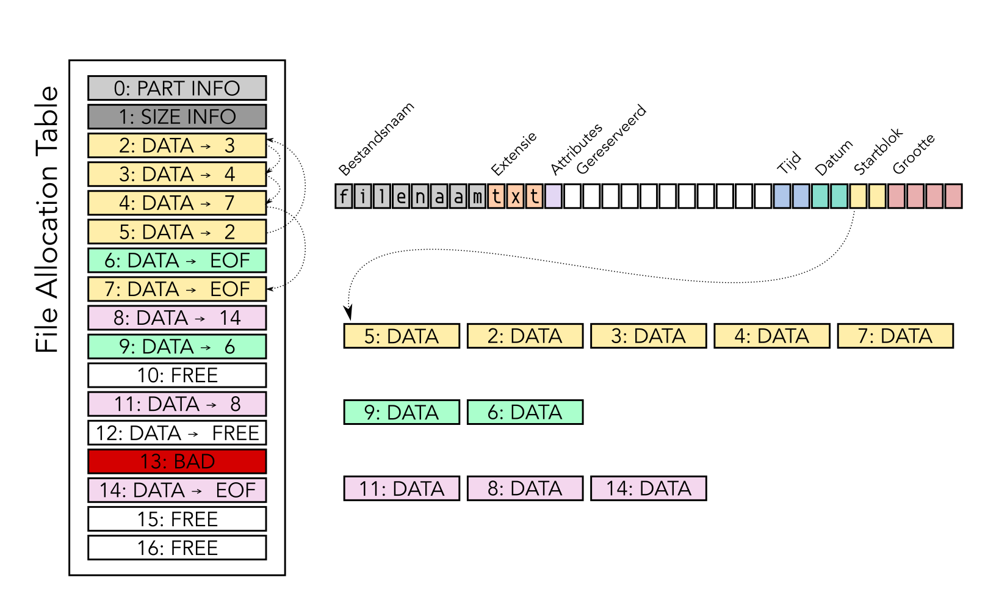
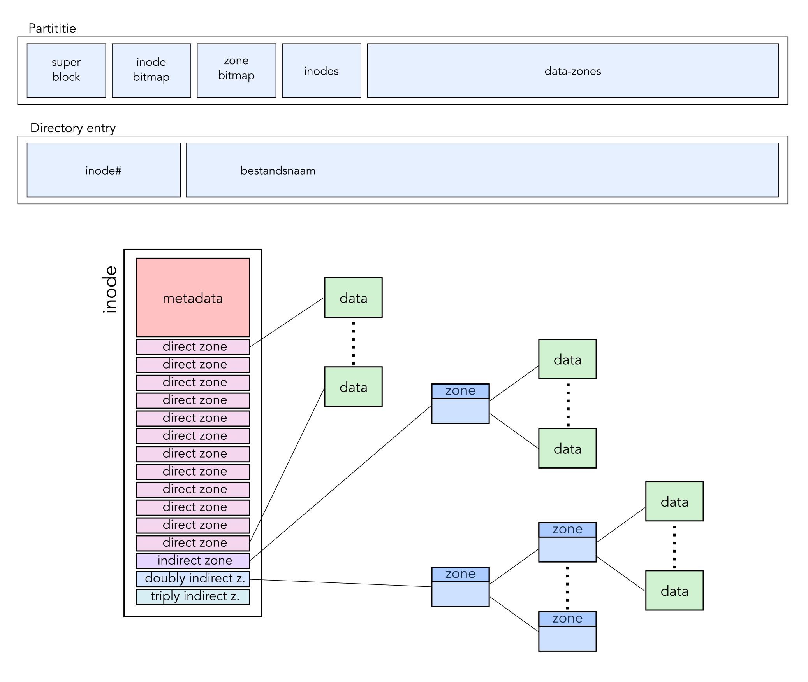
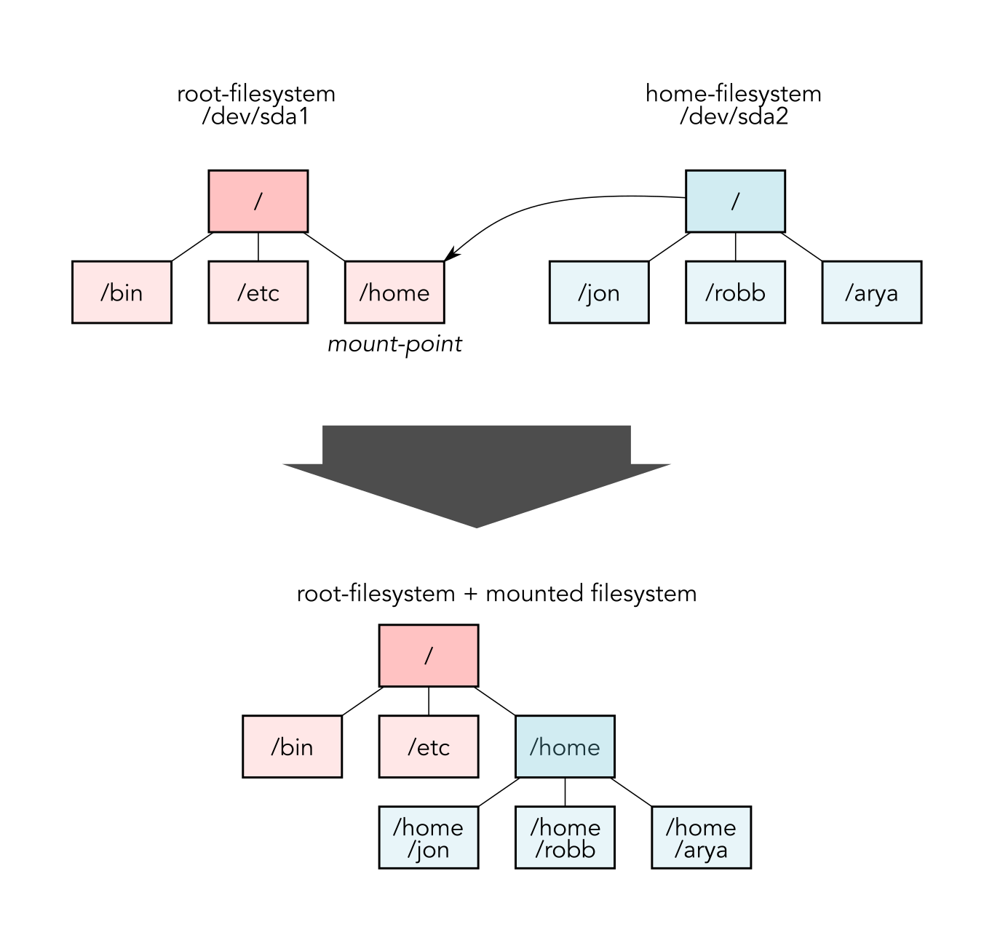
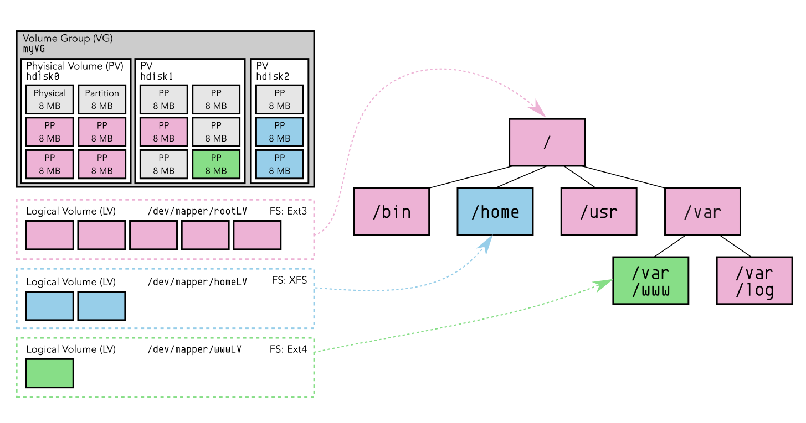
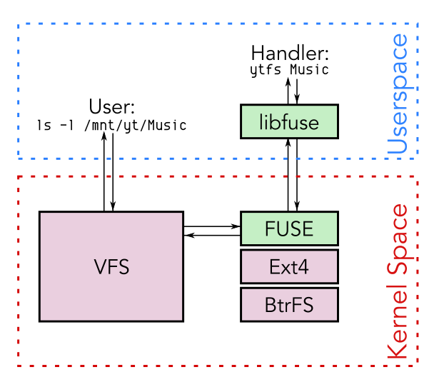
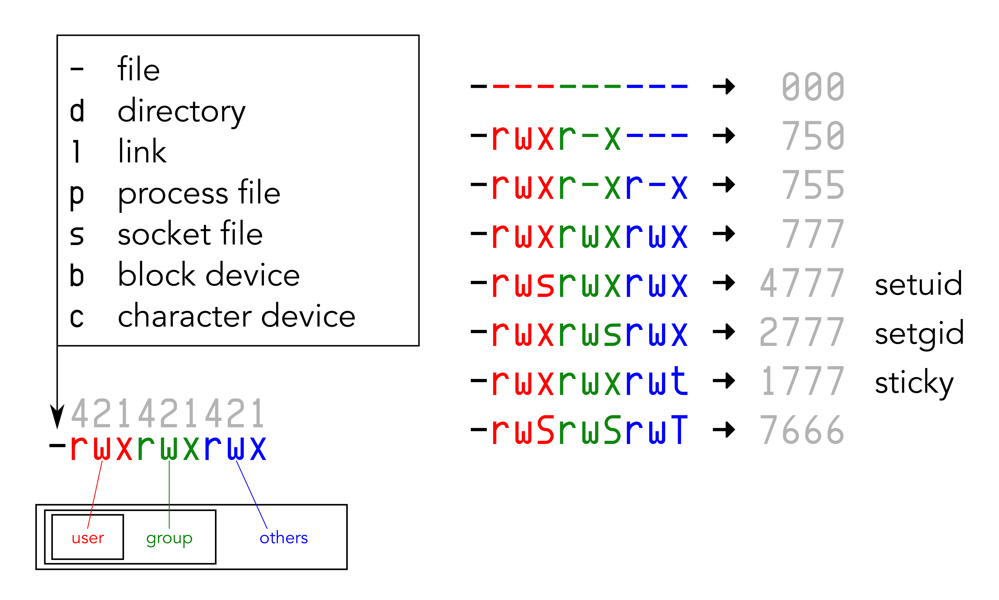

Filesystems en FHS
Embedded & Operating Systems 6
Inhoud
- Filesystems
- Partities
- Bestandstructuur in Linux
- Gebruikers en rechten
De Harde Schijf
- IO Device
- Heads, Tracks en Sectors
- Blocks
- Abstractie!
Filesystems
FAT

NTFS
- FAT verouderd
- Nieuw FS voor Windows
- Windows-only
inodes

Inhoud
- Filesystems
- Partities
- Bestandstructuur in Linux
- Gebruikers en rechten
Partities
- Softwarematige verdeling harde schijf
- Voor het OS bruikbaar alsof het een schijf is
- MBR vs. GPT
Mounting

inodes inzien met ls -i
2 drwxr-xr-x 1 root root 112 Sep 7 14:27 ./
2 drwxr-xr-x 1 root root 112 Sep 7 14:27 ../
509707 drwxr-xr-x 1 root root 4 Oct 3 14:37 bin/
510435 drwxr-xr-x 4 root root 4096 Jan 1 1970 boot/
1025 drwxr-xr-x 20 root root 3720 Oct 18 18:17 dev/
258 drwxr-xr-x 1 root root 1118 Oct 19 12:44 etc/
2 drwxr-xr-x 1 root root 20 Aug 7 10:34 home/
2259030 drwxr-xr-x 1 root root 12 Sep 7 14:27 media/
510827 drwxr-xr-x 1 root root 0 Aug 6 15:43 mnt/
1 dr-xr-xr-x 292 root root 0 Oct 3 14:37 proc/
509700 drwx------ 1 root root 198 Oct 19 12:44 root/
3085 drwxr-xr-x 21 root root 680 Oct 5 18:42 run/
1 dr-xr-xr-x 13 root root 0 Oct 3 14:37 sys/
510245 drwxrwxrwt 1 root root 16318 Oct 19 17:19 tmp/
509874 drwxr-xr-x 1 root root 6 Aug 6 15:33 usr/
509710 drwxr-xr-x 1 root root 82 Oct 3 14:37 var/
RAID en LVM
- LVM voegt een extra laag toe onder het filesystem
- Volumes niet 1-op-1 gebonden aan partities
- Extra features, e.g. snapshots
- Physical volumes, volume groups en logical volumes
- Redundancy
- RAID
LVM

The Next Generation
- Copy-on-Write
- Snapshots
- ZFS, Btrfs
Inhoud
- Filesystems
- Partities
- Bestandstructuur in Linux
- Gebruikers en rechten
De Filesystem Hierarchy Standard
bin - binaries (executables)boot - boot informatiedev - devices (virtueel)etc - system-level configuratiehome - user-levellib - libraiesmedia - opvolger van mntmnt - designated mount-pointproc - processen en systeem-informatie (virtueel)
root - home-directory van de systeembeheerderrun - run-time variabele datasbin - binaries voor alleen rootsys - info over devices, drivers en kernel-features (virtueel)tmp - tijdelijke map, wordt bij reboot geleegdusr - secondary hierarchy, bevat mappen voor multi-uservar - variabele data, logs, tijdelijke bestanden
/dev
/dev/sda/dev/sda1/dev/mapper/lv
/dev/pts//dev/tty/dev/ttyN
/proc en /sys
Virtual Filesystems en FUSE

Inhoud
- Filesystems
- Partities
- Bestandstructuur in Linux
- Gebruikers en rechten
Rechten

Eigenaar, groep en rechten aanpassen
chown user:group filechgrp group filechmod -R group directorychmod 755 filechmod u+xchmod +xchmod o+t
Wat hebben we deze les geleerd?
- Schijven, partities en filesystems
- FAT vs inodes
- Mounting
- RAID en LVM
- De FHS
- Virtuele bestandssystemen in Linux (
dev, proc en sys)
- Users en rechten